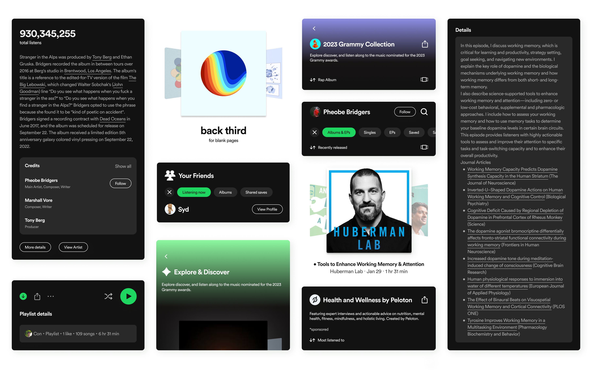
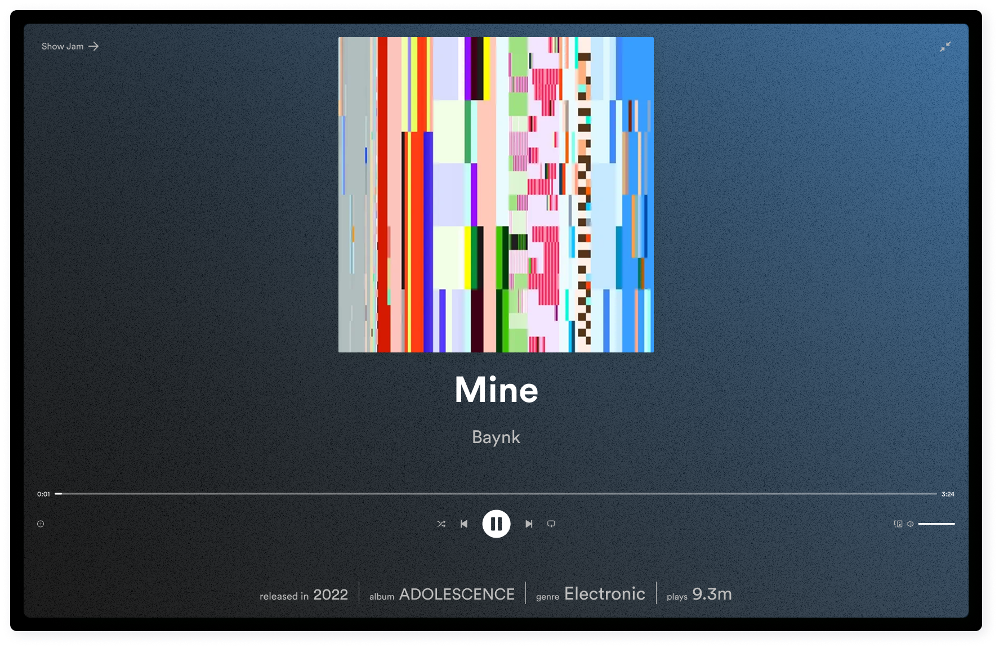
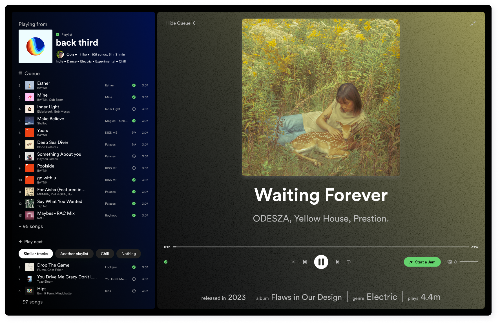
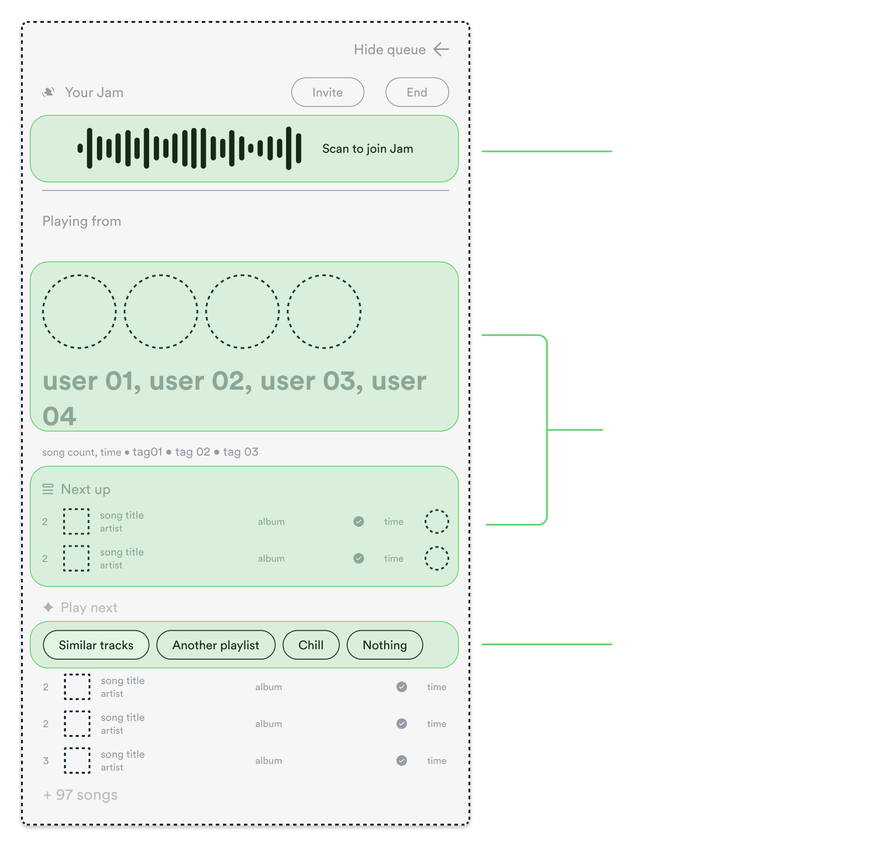
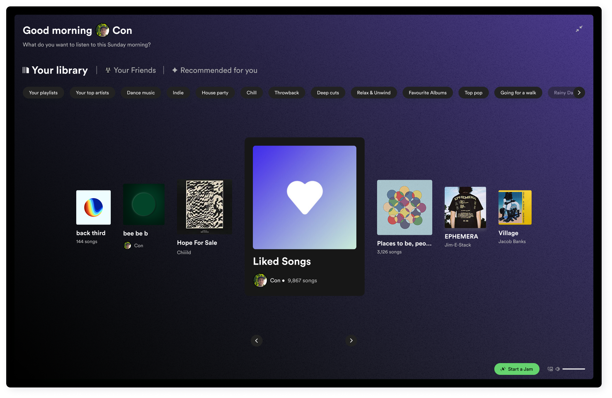

I spent minuteswith Spotify in 2024
5.1hours a day
Spotify Dreams
Fixing problems I have with Spotify
I spent 112,000 minutes with spotify during 2024. 5.1 hours a day. For all it's wonder, spending that much time with a product, you notice some problems.
– Oxymoronically, I also collect vinyl records, and it was this hobby that made me set out to design a solution that would solve two problems.
Problem 1: Organization and exploration of Spotify content is unweildy, as well as lacking in wonder.
Making digital more physical
I started with a skeleton ideation of how I would represent thumbing through physical records.
Making the view scalable
Spotify hosts a variety of different content
as well as a variety of methods to
organize this content.

I created a set of components and layouts that would adapt to this variety.

the final idea
Record Shelf

Discovered use cases
Through my exploration, I found new ways to display content I hadn't thought about before
Friend Activity
Record shelf allows for a dynamic and social view
of the content
friends are listening to.
Understand similarities in taste,
explore tags your friends
are into


Curated Collections
Thumb through grammy nominees, podcast collections,
top charts or other
curated
digital crates
See what's top of mind for the world
A Visual Library
Display your perfectly created playlists, find deep cuts from your favorites,
get suggestions based on your unique taste
Your library, in a new light

Problem 2: Spotify's fullscreen design is behind the times.
When Spotify went through a redesign in 2022, the fullscreen view was left behind:

While receiving new icons, fonts and ui elements,
I believe there is a lot to be
desired in terms of functionality and new features
I often see Spotify open on a television at parties, dinners or gatherings, fullscreen should be:
1. Beautiful
The fullscreen view should be a center piece that reflects what's being played
2. Useful
The fullscreen view shouldn't limit functionality
3. Understandable
The fullscreen view shouldn't feel cluttered or overvearing
Sketching
Staying in ine with Spotify's brand and identity I explored different ways to make the fullscreen view more in line with my goals


Neutral View
I landed on a view that would blend into the background of a gathering, added key functionality, and interesting information about the content being played

Modular View
Borrowing from the main desktop applications use of modular cards that take up the left or right hand side of the screen, all necessary functinality is a click away, or a click to hide


When there's nothing being played
To maintain functionality, teh fullscreen view allows for listeners to
quickly
browse
their library, friend activity, or recommendations

In Context